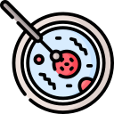
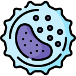

¿Qué estudia la microbiología?
a) Los mamíferos marinos.
b) Los microorganismos.
c) Las montañas rocosas.
¿Qué tipo de organismo es una bacteria?
a) Eucariota.
b) Procariota.
c) Acelular.
¿Qué tipo de organismo es un virus?
a) Eucariota.
b) Eucariota.
c) Acelular.
¿Cuál de los siguientes es un ejemplo de hongo?

a) Escherichia coli.
b) Candida albicans.
c) Plasmodium falciparum.
¿Qué tipo de organismo es un protozoo?
a) Bacteria.
b) Virus.
c) Eucariota unicelular.
¿Qué técnica se utiliza para distinguir entre bacterias Gram-positivas y Gram-negativas?
a) PCR.
b) Tinción de Gram.
c) Western blot.
¿Cuál de los siguientes es un patógeno comúnmente asociado con infecciones del tracto urinario?
a) Escherichia coli.
b) Mycobacterium tuberculosis.
c) Vibrio cholerae.
¿Qué enfermedad es causada por la bacteria Mycobacterium tuberculosis?
a) Tuberculosis.
b) Sarampión.
c) Gripe.
¿Cuál de los siguientes es el primer antibiótico descubierto?
a) Amoxicilina.
b) Tetraciclina.
c) Penicilina.